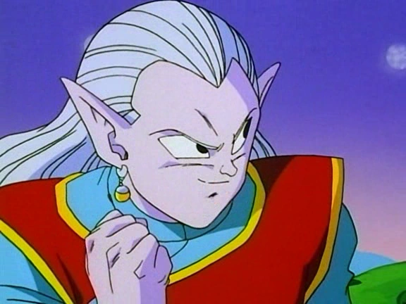
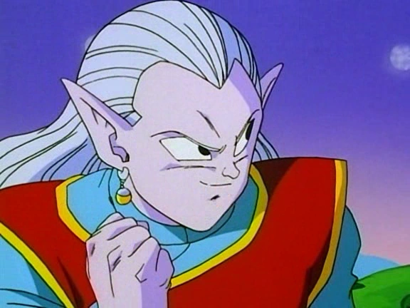

Esta página está optimizada para su visualización en ordenadores. La experiencia en dispositivos móviles o tabletas puede verse afectada. Agradezco su comprensión.
Dragon Ball, creado por Akira Toriyama en 1984, es una de las series de anime más influyentes y queridas del mundo.
Antes de fallecer por un hematoma subdural agudo (un tipo de hemorragia cerebral) a los 68 años de edad, trabajó en su último proyecto, Dragon Ball Daima, el cual se encuentra en emisión desde el 11 de octubre de 2024 (cada viernes a las 21:00 hora española disponemos de un nuevo episodio).
La historia sigue las aventuras de Goku, un niño que vive solo en el Monte Paoz (también conocido como La Montaña Baozi). Peculiar por su cola de mono y su gran fuerza que lo permite vivir de la naturaleza desde los 5 años tras la muerte de su abuelo adoptivo, Gohan.
El bastón mágico es un objeto peculiar que Goku recibe como regalo de su abuelo Gohan y lleva consigo durante sus primeras aventuras.
Una de sus características es su gran dureza y flexibilidad, que le permite expandirse y reducir su tamaño según las órdenes de Goku durante el combate y desplazamientos.
En el episodio número 12 de Dragon Ball, descubrimos una de sus utilidades más importantes: servir como medio para acceder desde la Torre Karin al Palacio de Kamisama (también conocido como el Templo Sagrado de Kamisama), la isla flotante en la que se encuentra Kamisama, el dios supremo que gobierna y cuida del planeta Tierra. Él fue quien creó las famosas esferas del dragón.
Además de ser una herramienta versátil, es un símbolo de los primeros pasos de Goku en su aventura para ser el guerrero más fuerte, representando el legado y los valores transmitidos por su abuelo adoptivo Gohan.


El radar de las esferas del dragón es un dispositivo introducido al inicio del anime, cuando Bulma lo encuentra entre los inventos de su padre en el sótano de la Corporación Cápsula. Después de encontrarlo, Bulma lo reconstruye, lo perfecciona y lo adapta a sus necesidades.


La nube voladora, también conocida como nube Kinton llegó en el episodio 3 de Dragon Ball, llamado "La nube dorada de Roshi". En este episodio donde apareció por primera vez el maestro Roshi, le dio a Goku la nube voladora como agradecimiento por llevar hasta el mar a su tortuga llamada tortuga o Umigame (tortuga en japonés). a habilidad de poder viajar por las nubes de Sun Wukong en Viaje al Oeste, personaje del cual se inspiró Akira Toriyama para crear a Son Goku.
La nube voladora proviene de la habilidad de poder viajar por las nubes de Sun Wukong en Viaje al Oeste, personaje del cual se inspiró Akira Toriyama para crear a Son Goku, y la pronunciación japonesa es un juego de palabras con kurikinton, que es un dulce japonés a base de puré de boniato y castañas confitadas, cuyo aspecto es similar al de la nube.
Antes de entregarle esta nuebe voladora, le advirtió de que solo las personas de corazón puro pueden subirse a ella, y quien no cumpla este requisito la traspasará como una nube común, a menos que se sostenga de un viajero que sí pueda usarla. Se puede llamar desde cualquier espacio abierto y transportar al viajero hacia cualquier lugar, pero con la altura máxima de la Torre de Karin.
Además de la nube voladora, en un episodio (62) de Dragon Ball llamado "La nubes mágicas de Karin" conocimos la Nube Oscura, con las condiciones opuestas a la que ya conociamos. Al subir Tao Pai Pai a la torre Karin, se la dio como recompensa, sabiendo sus malas intenciones. Para poder montarse en ella, se necesitaba de un corazón lleno de maldad. No fue más que una trampa, ya que cuando se dispuso a usarla la nube se evaporó.
Es curioso por que más adelante sabemos que el maestro Roshi obtuvo la nube kinton gracias a Karin, pero también supimos que Roshi no es de corazón puro.

Las semillas del ermitaño también conocidas como Judías Mágicas en España, son una especie de legumbres cultivadas por el maestro Karin, creador de ellas. Aparece en el episodio 62 donde muestra su gran utilidad en el anime, que no es ni más ni menos que recuperar toda la energía de quien la consume, al instante, incluso cuando estás casi muerto, lo que la convierte en la mejor curación del mundo, sin embargo no puede curar enfermedades, solo heridas físicas, que durante gran parte del anime sirven de mucha ayuda a Goku y a sus amigos.

El agua Supersagrada, también conocida como agua sagrada, es un líquido guardado en una botella por Karin en su torre, la cual es otorgada a quienes logran escalar la Torre Karin y quitarle la botella.
Había una leyenda la cual decía que aquel que consumiera el agua supersagrada, aumentaría considerablemente su fuerza. Tras varios intentos de conseguirla frente al maestro Karin, Son Goku le preguntó si alguna vez antes alguien había logrado la hazaña de quitarle la botella, a lo que respondió el gato Karin que solo una persona lo consiguió, y no fue ni más ni menos que el maestro Roshi, tras 3 años.
Despues de un tiempo Goku logró ir leyendo los movimientos de Karin, hasta quitarle la botella en tan solo 3 días, lo que como era de esperar, sorprendió mucho al gato Karin.
A pesar de tanto nombre y esfuerzo, resulta que el agua no tiene nada diferencial, es simplemente agua, sin embargo, el esfuerzo que se ejerce para escalar la torre de Karin y pelear para lograr obtener esta botella, es la verdadera recompensa, asegurándote haber mejorado alguna de tus habilidades como la agilidad, paciencia y velocidad.

El agua de la inmortalidad, también conocida como la medicina de la inmortalidad es una supuesta agua mística que posee propiedades rejuvenecedoras, la cual aparentemente tiene la capacidad de restaurar el cuerpo en el mismo estado tanto físico como mental en la que se ha bebido, además de evitar que el consumidor muera de forma natural y envejezca.
En el anime se dice que el único que la consumió fue el maestro Roshi, al cual se le dice que perdió algunas de sus habilidades de combate dado a que la consumió con una edad avanzada, la cual se quedó para siempre ya que no envejecerá más.
A pesar de esto, en el Arco del Gran Rey Demonio Piccolo se menciona que todo lo dicho por Roshi fue una mentira, revelándoselo a Tenshinhan.
Razones que podrían explicar que el maestro Roshi pueda vivir a pesar de tener más de 300 años, siendo el único terrícola en lograrlo.

El agua ultrasagrada es un extraño líquido guardado en una de las salas del Templo de Kamisama. Su origen es desconocido, al igual que la Neblina Agua, ya que sólo es material de relleno presente en el Templo de Kami.

Los Potara, también conocidos como Potara, son artefactos místicos que los Kaio-shin y sus asistentes han mantenido como tradición durante diferentes generaciones en forma de zarcillos.
Estos pendientes son usados por todos los Kaio-shin como parte de sus equipos estándar y vienen en varios colores.
La fusión Potara es similar a la técnica de la Danza de la Fusión; una de las diferencias es que los pendientes Potara ofrecen un efecto más potente y duradero. Además, la ropa se mezcla, cambiando el color o el orden, lo cual no sucede con la Danza de la Fusión, donde los usuarios conservan el traje típico de los metamoranos.
 

Los Anillos del Tiempo son un accesorio usado principalmente por los Kaioshin, quienes pueden interactuar entre diferentes líneas temporadales.
Los anillos del tiempo poseen la cualidad que detecta cualquier anomalía reciente en el pasado, presente y futuro, reaccionando de manera independiente y alertando al portador de lo sucedido.
Una vez que detectada la anomalía, el anillo del tiempo crea un portal oscuro, que permite al usuario viajar por el hacia el pasado, presente o futuro, pero en un corto periodo de tiempo. Una vez pasa el tiempo, el portador es arratrado a la fuereza a su época de tiempo original.
Según Whis el anillo del tiempo solo es usado para viajar al futuro y luego voler al presente. Usandoe este anillo, debería ser teóricamente imposible viajar al pasado, y el usuario no puede viajar a través del tiempo a su voluntad.
Una excepción es cuando Goku Black pudo detectar una anomalía en el flujo del tiempo cuando Trunks viajó con la máquina del tiempo, logrando viajar por un tiempo corto al pasado.
Es dicho que cualquiera no Kaio-shin también puede usar este tipo de anillo al tener un Pothala y más aún cuando uno comparte uno perteneciente a un par de pendientes Pothala de alguien que ostenta el cargo de Kaio-shin.
Los anillos del tiempo verdes representan la creación de líneas de tiempo alternas. Por lo que el número de anillos verdes nos indican cuántas personas o veces se ha viajado al pasado. Se crea un nuevo aniñño cada vez que agluien modifica el pasado.
El uso regular del anillo del tiempo implica darle una orden con la cantidad de tiempo hacia el futuro que se desea viajar, cubriendo al usuario con una burbuja la cual es cubierta por un remolino de luz que al disisparse, ubica al usuario en el mismo lugar de donde partió en el punto destino del futuro. Dos usuarios pueden utitilzar un mismo anillo del tiempo a la vez si estos chocan los puños y dan la orden de tiempo a la vez, pero solo si ambos poseeen al menos un pendiente Pothala, simbolo del puesto de Kaio-shin.

Como era de esperar, Dragon Ball tiene sus propios videojuegos, que no son pocos, por eso te lo dejo a continuación, y ordenado por décadas desde el primero hasta el día de hoy. Al lado de los listado adjunto la imagend el juego más vendido de es decada.


En Arabia Saudita la compañía de Qiddiya Investment está creando un parque temático dedicado a Dragon Ball de 500.000 metros cuadrados. Será el primer parque temático de Dragon Ball en todo el mundo, donde desde la web oficial dicen que "los visitantes podrán vivir una aventura con Goku y sus amigos mientras disfrutan del mundo de Dragon Ball, desde el principio del anime hasta Dragon Ball Super".
En el parque tendremos 7 zonas distintas (en referencia a las esferas del dragón), en las cuales tendremos lugares tan míticos como lo son la Kame House, la Capsule Corpotartión, el planeta de Berrus (el dios de la destrucción del universo 7) y la torre de Karin entre otras zonas emblemáticas.
Según el comunicado de la compañía, el parque contará con un total de 30 atracciones temáticas, de las cuales 5 son atracciones ¡únicas en todo el mundo!, que aún no han sido desveladas. Lo que si sabemos es que habrá una estatua enorme de Shenron con una montaña rusa de 70 metros de altura. En sus pies podremos observar las 7 esferas del dragón. Como no podía faltar, habrá hoteles y restaurantes.
El parque temático se encontrará dentro del proyecto Al-Qiddiya, un megaproyecto de entretenimiento conocido como la ciudad Neom, el cual lleva en contrucción desde el 2019 y se espera que sea el más grande en todo el planeta Tierra, con una superficie de 334 kilómetros cuadrados.
Se estima que el precio es de unos 80.000 millones de dólares.
Por ahora no sabemos cuándo será contruida, mucho menos la fecha de apertura, pero lo que tenemos claro es que muchos (donde me incluyo) estaremos deseando que llegue ese día.